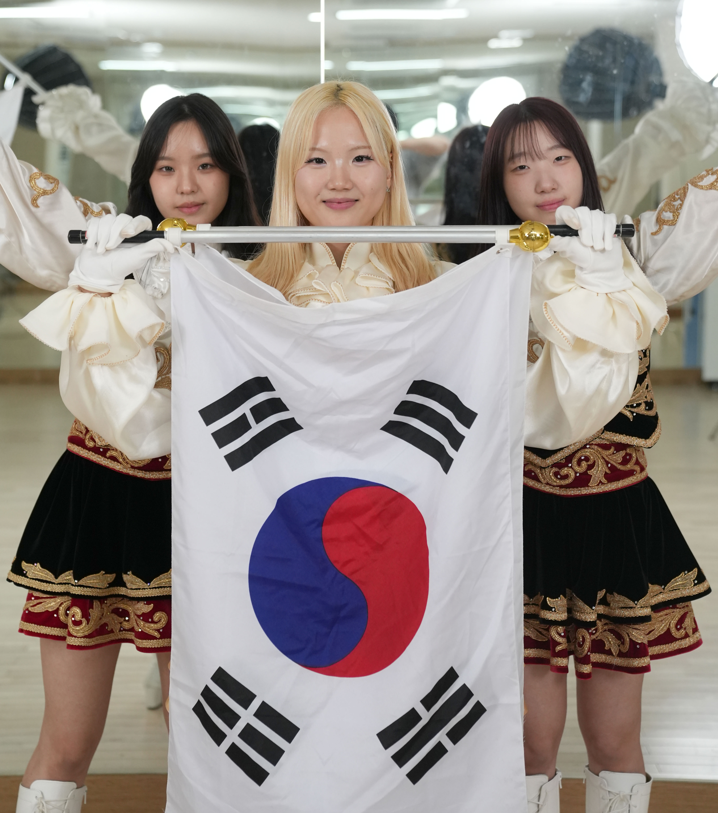

대학 축제 때마다 무대 위에서 깃발을 휘두르던 그 에너지 넘치는
응원단이, 이번에는 ‘공유마당’ 덕분에 조금 특별한 스포트라이트를
받게 됐다. 한국저작권위원회 공유마당에 기증된 음원을 활용해 무대를
꾸미고, 통일부 주최 2025 대한민국 응원전’에서 우수상을 거머쥔
인천대학교 응원단 커플리온스가 그 주인공이다.
저작권 걱정 없는 음악을 찾아 헤매던 대학생들이 공유마당에서
기증저작물을 만나, 자신들만의 액션과 깃발 연출로 ‘벅차오름’을
만들어낸 이 이야기에서, 우리는 기증저작물이 청춘의 무대를 한층 더
넓혀 줄 수 있음을 확인하게 된다.
Q 지면을 통해 만나는 독자 여러분께 간단한 자기소개와 함께, 커플리온스라는 이름의 의미와 팀 활동을 소개해 주세요.
안녕하세요. 저희는 인천대학교 응원단 ‘커플리온스(COUPLIONS)’입니다. 커플리온스는 인천대학교의 상징 동물인 사자에서 착안해 만들어졌습니다. 두 마리 사자가 함께한다는 뜻으로 COUPLE과 LIONS가 합쳐진 이름입니다. 처음에는 축구부를 응원하기 위한 목적으로 만들어졌으나, 현재는 교내 구성원들을 응원하고 모두가 함께 즐길 수 있는 무대를 만들고 있습니다. 대표적으로 신입생을 환영하는 예비대학과 오리엔테이션 무대, 그리고 전교생이 함께 어울릴 수 있는 응원제를 개최하고 있습니다. 저희는 무대를 통해 관객분들이 ‘벅차오름’을 느낄 수 있도록 노력하고 있습니다.
Q 한국저작권위원회의 공유마당은 어떻게 알게 되었고, 기증저작물을 활용하게 된 계기는 무엇인가요?
응원전에 참가하기 위한 조건 중 하나가 ‘저작권 문제가 없는 음악’이었습니다. 그래서 인터넷에서 여러 자료를 찾던 중 ‘공유마당’이라는 문구를 보고 사이트에 들어가게 되었습니다. 살펴보니 음원뿐 아니라 텍스트 등 다양한 기증저작물이 등록되어 있었습니다. 저희가 찾던 조건에 딱 맞는 곳이었습니다.
Q 응원전에서 에일리의 「STRONGER」와 윤도현의 「아리랑」을 선택하신 이유가 궁금합니다.

당시 전 단장님이 곡을 선정하셨습니다. 응원전이 통일부에서
주최하는 대회였기 때문에 ‘한국적인 흥’이 담긴 곡을
원하셨습니다. 그래서 공유마당에서 ‘대한민국’이라는 키워드로
검색했고, 최종적으로 「STRONGER」와 「아리랑」을 선택했습니다.
「STRONGER」는 쓰러지고, 어둠 속에서도 끝끝내 꿈을 이루고 빛을
찾아낸다는 내용이 인천대학교 학생들의 청춘과 닮아 있다고
느꼈습니다. 대회의 성격과도 잘 맞았습니다. STRONGER가 응원단의
정교함과 청춘의 끈기를 표현한 곡이었다면, 「아리랑」은
한민족의 흥 그 자체를 보여주는 곡이었습니다. 커플리온스만의
깃발 연출과 액션으로 이를 표현해냈고, 잘 녹여냈다고
생각합니다.
Q 저작권 걱정 없이 자유롭게 이용할 수 있는 기증저작물이 팀 운영이나 연습 과정에 어떤 실질적인 도움이 되었나요?
창작의 문턱을 낮춰줬다고 생각합니다. 저작권 걱정 없이 자유롭게 편집하고 변주할 수 있었기에, 저희만의 액션을 표현할 수 있는 곡을 마음껏 사용할 수 있었습니다. 그 덕분에 우리 민족의 정서와 응원단의 에너지가 조화된 무대를 완성할 수 있었고, 좋은 결과로 이어질 수 있었습니다.
Q 앞으로 커플리온스가 나아갈 방향이나 목표가 있다면 무엇인가요?
상투적인 표현일 수 있지만, 모두가 즐길 수 있는 무대를 만들고 싶습니다. 응원단 활동을 통해 ‘벅차오름’이라는 단어의 의미를 배웠습니다. 응원은 관중을 위해 하는 활동이지만, 관중분들이 즐겨주시면 저희도 힘을 얻습니다. 그 시너지가 목끝까지 차오르는 벅참으로 이어지는 것 같습니다. 앞으로 커플리온스를 이어갈 인천대학교 학생들, 그리고 저희 무대를 봐주시는 모든 분들이 그런 벅참을 느껴보셨으면 좋겠습니다.
Q 마지막으로 소식지를 통해 독자들과, 저작권 나눔을 실천하고 있는 기증자분들께 한 말씀 부탁드립니다.
수많은 대학 중 저희 인천대학교 응원단 커플리온스가 이 자리를 통해 독자분들을 만날 수 있었던 것은, 소중한 창작물 나눔을 실천해주신 기증자분들 덕분이라고 생각합니다. 앞으로도 이러한 창작물들이 다양한 방식으로 더 많은 사람들에게 닿아 공유마당을 알리고, 또 다른 창작의 선순환이 이어지길 바랍니다. 저희 커플리온스도 그러한 선한 흐름에 참여하며, 나비효과를 일으킬 수 있는 응원단이 되고자 합니다.